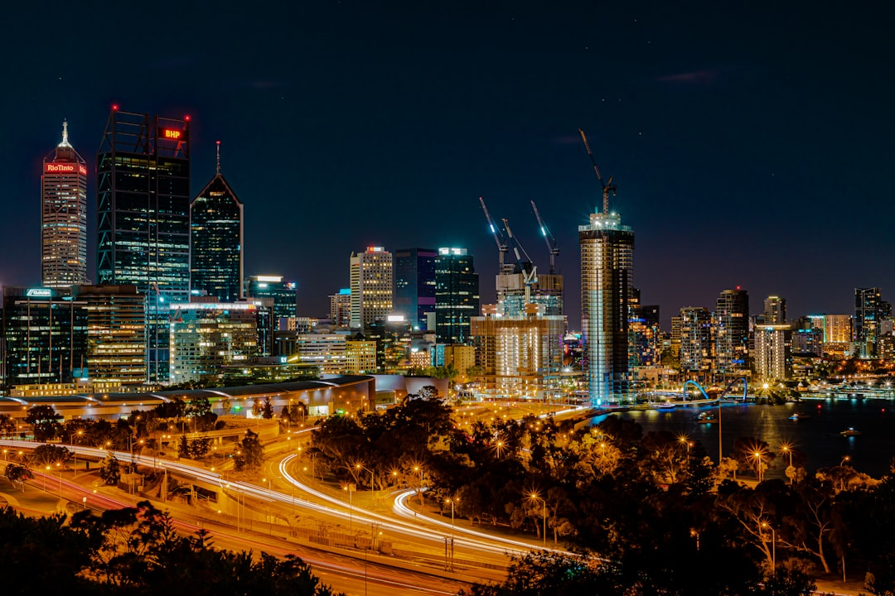

The source page gives three usable facts: Best Website Creation is presented as free, conversion-focused, and for Australian businesses. Treat those as prompts for due diligence. Before engaging, confirm what free includes, how conversion goals will be built into the site, who supplies content, who owns access, and how accessibility, search basics, mobile usability and post-launch changes will be handled.
For Australian business owners comparing website design australia options, the useful starting point is whether the finished site can explain the offer and prompt the right enquiry.
Website Design Australia Explained
Best Website Creation is presented on its published page as a free, conversion-focused web design option for Australian businesses. That is a concise claim, so a buyer should ask for the operational detail behind it before relying on the offer.
The page does not list packages, timeframes, platform choices or inclusions. A clear conversation should cover pages, copy, images, forms, hosting, analytics, support and ownership. If any item sits outside the free build, the buyer should know that before content or design work starts.
- Ask which pages are included and which require separate work.
- Confirm who approves copy, images, calls to action and contact forms.
- Check whether basic search, analytics and mobile review are included.
- Clarify domain access, hosting access and ownership of published content.
Who this guide applies to
This guide suits small and local Australian businesses that need a public website and are comparing a free design offer with a paid agency, a template builder or an internal build. It is most useful when the site needs to turn offline trust into calls, quote requests, bookings or email enquiries.
It is less suited to complex ecommerce, regulated customer portals, custom software or projects with heavy integration requirements. Those still need careful design, but the buying process should also cover security, architecture, support commitments and change control. Those details are not stated in the source page, so they should be raised directly.
For a city-specific view, this companion guide to web design Brisbane considerations frames similar questions through a local service-business lens.
Briefing a conversion-focused build
A useful brief starts with the action the site should support. For many service businesses, that action may be a phone call, quote request, booking enquiry or email. Since the source page uses conversion-focused positioning, ask how the proposed layout will make that action visible without making the page vague or forced.
The brief should also identify the questions a first-time visitor brings to the page. They may need to know what the business does, where it works, how to start, what evidence supports the claims, and whether the next step is low friction. Those questions shape page order, headings, proof points, button labels and form fields.
- Define the primary enquiry action before discussing visual style.
- List the main services or offers in plain language.
- Prepare approved business details, images and trust signals.
- Ask how mobile users will reach the same action quickly.
- Confirm how launch checks will be documented.
Launch checks that affect trust
The World Wide Web Consortium is a standards body for the web, so accessibility and valid structure should be treated as part of quality, not decoration. A buyer does not need to become a developer, but they can ask whether the site uses clear headings, readable contrast, keyboard-friendly navigation, descriptive links and forms that work on a phone.
Search engine optimisation begins with fundamentals. For this topic, relevant concepts include search results pages, backlinks, web traffic, local search, digital marketing and keyword research. In buyer terms, the site should have crawlable text, sensible page titles, descriptive internal links and content that reflects the real business offer.
The Australian Competition and Consumer Commission is relevant because business websites make representations to consumers. Review wording before launch. Avoid claims about being the best, cheapest, fastest or most trusted unless the business can substantiate them.
Free build or paid project
A free design offer can suit a business that needs to get online, test a clearer message or replace an underperforming first site. Free does not define scope. Ask whether future changes, hosting, domains, copywriting, image sourcing, search work, analytics, support or redesign rounds are included.
A paid project may be better when the business needs deeper planning, multiple stakeholders, custom content, ecommerce, complex forms, integrations or a defined support arrangement. For website design australia comparisons, compare the proposed page structure, content responsibilities and handover notes. A good decision is based on fit, not only on whether the upfront build has a fee.
- Read the source claim. Start from the stated free, conversion-focused offer and avoid assuming inclusions that are not listed.
- Define the enquiry goal. Choose the main action the site should support before assessing layouts or colours.
- Confirm scope in writing. Ask what pages, copy, images, forms, search basics, hosting and support are included.
- Review standards and claims. Check accessibility basics, mobile usability and the accuracy of business representations before launch.
- Plan the handover. Confirm access, ownership and update responsibilities so the site can be maintained after publication.
| Option | Best fit | Questions to ask |
|---|---|---|
| Free conversion-focused build | A business that needs a clear public presence and can confirm scope before starting | What is included, who owns access, and what support happens after launch? |
| Paid design project | A business with complex pages, integrations, ecommerce or multiple approvals | What deliverables, revisions and support terms are documented? |
Common questions
Is a free website design offer enough for an Australian business? It can be enough for a simple public presence if the included scope is clear. The source page says the offer is free and conversion-focused, but it does not state package inclusions.
What should conversion-focused design mean in practice? It should make the visitor's next step clear, such as an enquiry, call or booking request. Useful checks include page structure, plain copy, visible calls to action, mobile usability and accurate supporting information.
Should search engine optimisation be discussed during the web design brief? Yes. Search basics such as crawlable text, useful headings, descriptive titles and relevant content belong in the brief before broader digital marketing or backlink work is considered.
What consumer-law issue should a business website avoid? Website copy should avoid unsupported claims about price, quality, speed or market position. The ACCC is the Australian consumer authority relevant to business representations.
This guide covers practical checks for Australian businesses comparing a free, conversion-focused web design offer with other build options.